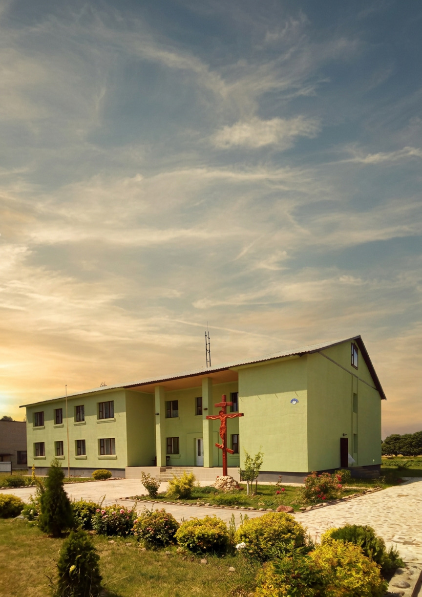

+375 29 784 18 20
|
+375 29 557 86 41
Поддержка помогает реабилитационному центру «Анастасис» сохранять возможность принимать людей, которые оказались в трудной жизненной ситуации и сделали первый шаг к изменениям.
Каждое пожертвование становится вкладом в создание условий для восстановления, поддержки человека и его семьи на пути к новой жизни.

Вы можете поддержать центр через удобную форму оплаты. Это быстрый способ сделать пожертвование с помощью банковской карты.
Сделать пожертвование
Вы можете сделать перевод напрямую по реквизитам центра. Этот способ подходит для организаций и частных лиц.
Посмотреть реквизитыРеабилитация человека — это сложный путь, который требует времени, поддержки и внимательного отношения. В центре создаются условия, где человек может остановиться, переосмыслить свою жизнь и сделать первые шаги к изменениям.
Ваша помощь помогает сохранять возможность принимать людей, которые нуждаются в поддержке, проходить программу восстановления и возвращаться к полноценной жизни.
Каждое пожертвование — это участие в деле помощи человеку и его семье. Это возможность поддержать тех, кто решил изменить свою жизнь.
Учреждение «Центр реабилитации зависимых от алкоголя и наркотиков «Анастасис Сосновка»
231825, Республика Беларусь,
Гродненская область,
Слонимский район,
аг. Сосновка, ул. Школьная, 2
р/с ВУЗАКВВ30150432732234100000
ОАО «АСБ «Беларусбанк», г. Минск
БИК АКВВВY2Х
УНП 590318569
+375 1562 4 77 46
+375 1562 4 76 04
+375 29 784 18 20
+375 29 557 86 41
anastasis.by@mail.nu
Мы благодарим каждого, кто помогает центру продолжать свою работу. Ваше участие позволяет сохранять возможность принимать людей, которые делают шаг к изменениям и начинают путь восстановления.
Любая поддержка — это внимание, забота и вклад в жизнь человека и его семьи. Спасибо, что разделяете желание помогать тем, кто стремится изменить свою жизнь.